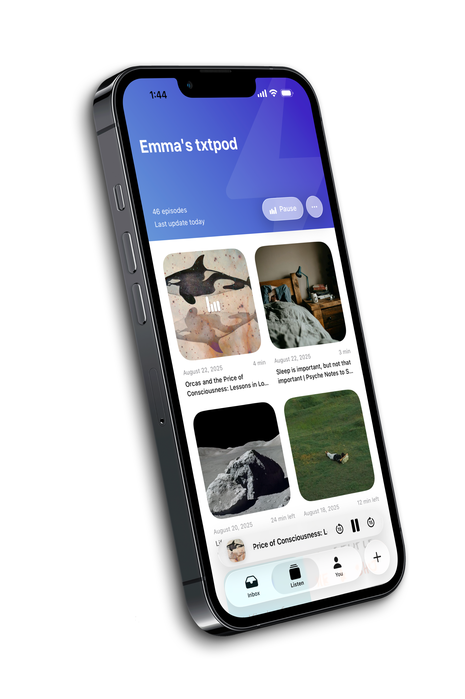
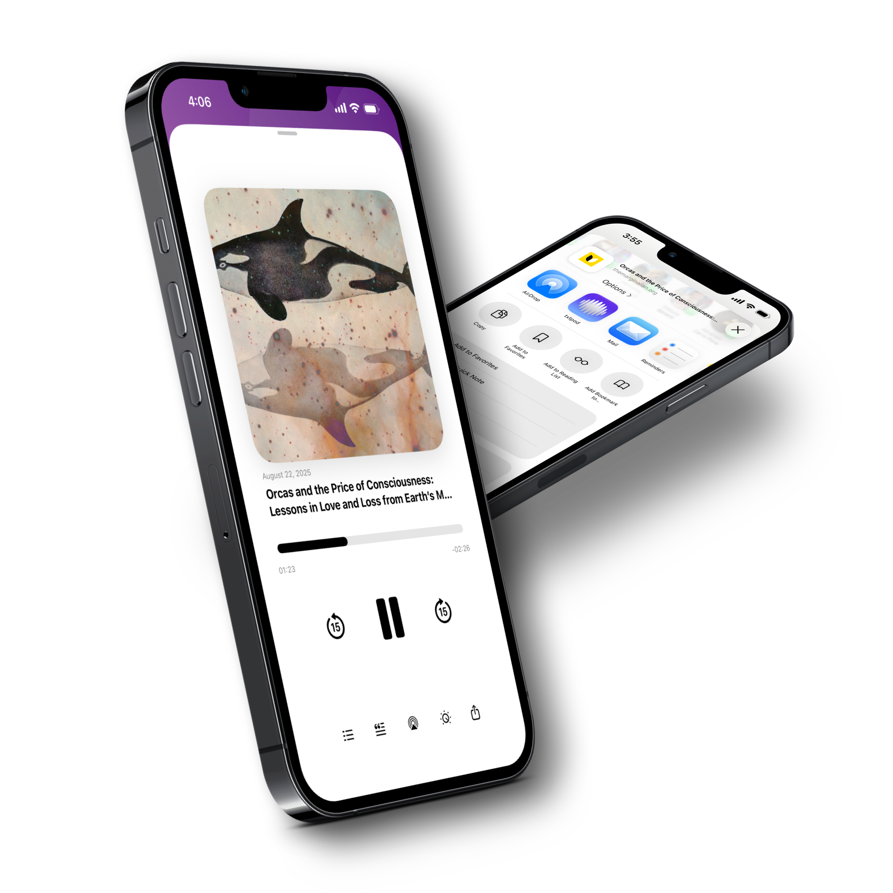
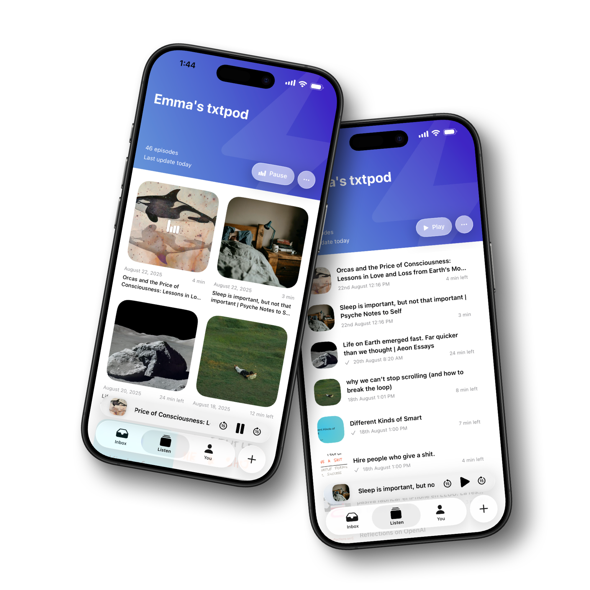
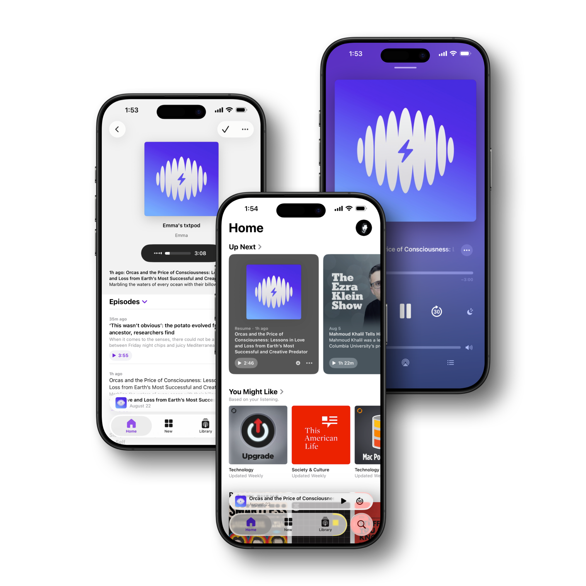
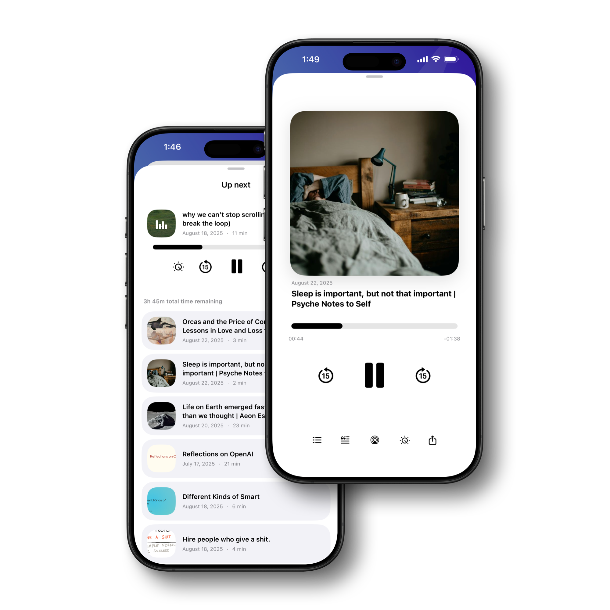
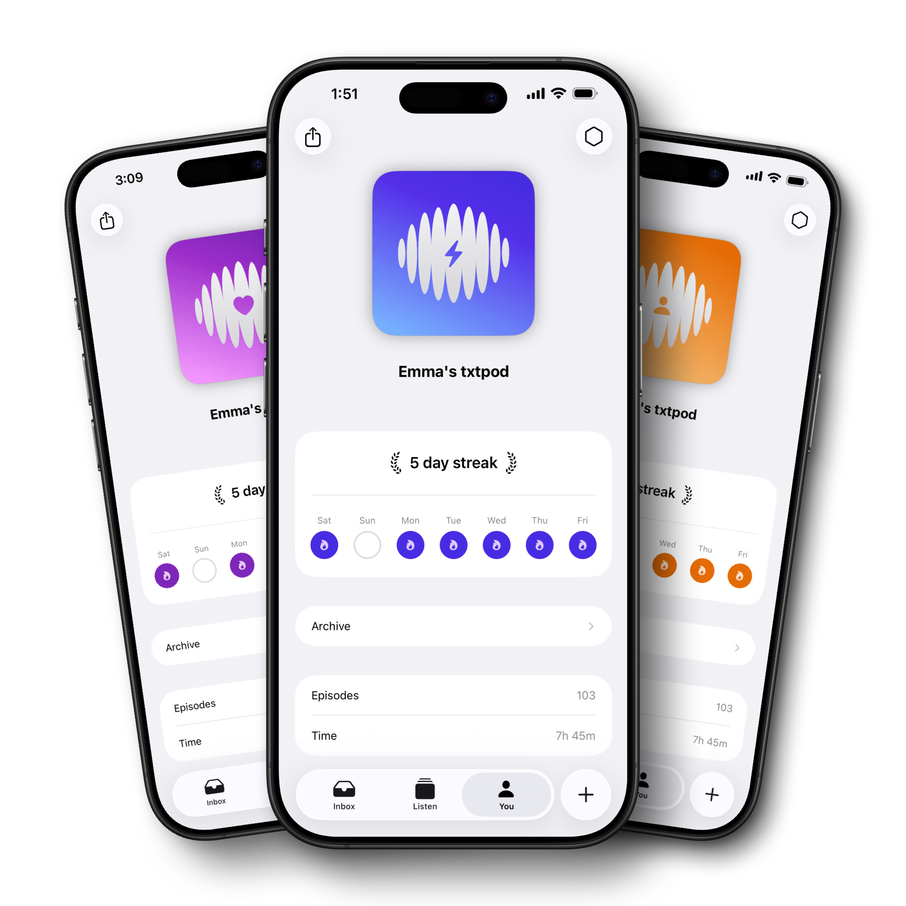

Save
Send articles, links and PDFs from the share sheet, the web app, a bookmarklet, or read-later services like Instapaper, Matter and Readwise.
Save an article, a link or a PDF and txtpod reads it out loud, word for word, in an ultra realistic voice. The full text becomes an episode in your own private podcast feed, ready to play in any podcast app or right in your browser.
Scan with your camera to get txtpod on the App Store. Or search "txtpod".

txtpod turns your reading backlog into a listening queue you can actually finish, without another reading app to babysit.
Send articles, links and PDFs from the share sheet, the web app, a bookmarklet, or read-later services like Instapaper, Matter and Readwise.
txtpod strips the ads and clutter and reads the actual text out loud, from the first word to the last, in an ultra realistic voice. It's the article itself, not a summary or someone's take on it.
Every episode lands in your private podcast feed. Play it in Apple Podcasts, Overcast, Pocket Casts, in txtpod for iOS, or in your browser.
These are the same welcome episodes every new user gets, generated by txtpod and untouched. Every word you hear is the original text.
Generated with txtpod's AI voices. This is exactly what your saved articles will sound like.
Everything you save is read out in full, word for word, and lands as an episode in a feed that follows you everywhere.
Share any article or link from any app and txtpod narrates the complete text in an ultra realistic voice. Nothing is summarised and nothing is editorialised: you hear the piece exactly as it was written, on commutes, workouts and chores.

Upload a PDF and hear the document itself, page after page, as clean audio. Everything you send to txtpod, whether it's a web page, a document or a read-later save, waits in a single inbox, ready to listen.

txtpod gives you a private RSS feed. Subscribe once in Apple Podcasts, Spotify, Overcast, Pocket Casts or any player, and new episodes appear automatically next to your regular shows.

Pick a favorite voice or shuffle between them. Articles you save can be translated into your language automatically and then read out in full by a natural local voice, so everything you find stays understandable.

Design your podcast artwork, name your feed, and keep the listening habit going with streaks and stats that show how much you've turned reading time into listening time.

Saving articles is only half of it. txtpod also researches the web and produces original episodes on the topics you care about, narrated in the same realistic voices.
Type what you're curious about, from black holes to Renaissance banking. The AI researches it, writes a full-length article and narrates it end to end. You choose the length, the language, the style and how deep it goes.
Pick the subjects you follow and the days you want them. Every morning txtpod scans online sources and drops a fresh news brief into your feed, so it's waiting when you make coffee.
Get the key ideas from any article before you commit to listening to the whole thing.
See what's next and control playback without opening the app.
Bring the reads you already saved elsewhere straight into txtpod.
Pick a colour and symbol so your feed looks like yours in any podcast app.
See how much reading time you've turned into listening time, and keep the run going.
Choose a favorite, shuffle per episode, or auto-translate into your own language.
Log in with the same account to save articles and listen from any browser on any computer. Your feed, episodes and settings stay in sync with the iOS app.
This is what people using txtpod say. Every quote is a real App Store review. Read them on the App Store
The brilliance isn't simply converting text to speech. It's that txtpod turns articles, links, PDFs, and even AI-generated topics into real podcast episodes that are published to your own private podcast feed. I save something once, and later it shows up alongside my regular podcasts. […] If you already spend time listening to podcasts and wish the internet could come to you in that same format, txtpod is one of the most innovative apps on the App Store.
I've been enjoying using it to turn PDFs into audio as well as articles from a read later app. The custom podcast allows me to catch up on things hands free during my commute. I also like how there is a setting to allow different voices, almost like shuffle. So each article can have a different voice and that makes it pretty fresh.
Without a doubt a different kind of app that's worth every last cent. If you like reading articles and you love podcasts, you can't ask for anything more. And Cristian is an attentive developer who answers any question right away. A 10/10.
This app proves that a seemingly simple idea becomes something incredibly useful when it's executed as well as this. Congratulations.
A superb application that brings several key tools of the Apple ecosystem together into one hub for all kinds of content on the internet.
The app is brutal. I've spent months looking for something like this.
A brilliant idea that I'll keep on using.
txtpod reads your articles, links and PDFs out loud and delivers them as podcast episodes. Save something once and txtpod extracts the clean text, narrates the whole thing in an ultra realistic voice, and drops the episode into your own private podcast feed. You can play it in any podcast app, in txtpod for iOS, or in your browser.
It reads the actual article. txtpod narrates the original text word for word, from the first sentence to the last. There is no host, no commentary and no AI discussion of the piece: the content you hear is the content you saved, just in audio. (Summaries are a separate, optional extra if you want the gist first.)
txtpod doesn't lock you into another player. It creates a private podcast feed, so your narrated articles show up next to your regular shows in Apple Podcasts, Overcast, Pocket Casts or any app that supports RSS.
There are 30+ natural AI voice styles across 20+ languages, and txtpod can automatically translate saved articles into your preferred language before reading them out with a native-sounding voice.
Yes. Import any PDF and txtpod reads the document itself, giving you clean audio you can listen to anywhere.
Yes. Log in to the txtpod web app with the same account as the iOS app to save articles and listen from any browser on any computer.
Yes. Each account gets a private RSS feed intended only for your personal use in your podcast app.
txtpod is free to try. For unlimited articles and PDFs there's Premium Pass, which you can get in the iOS app and cancel anytime.
More questions, tutorials and comparisons in Support.
Free to try, and your first episodes are minutes away. For unlimited articles and PDFs there's Premium Pass.
Scan with your camera to get txtpod on the App Store. Or search "txtpod".